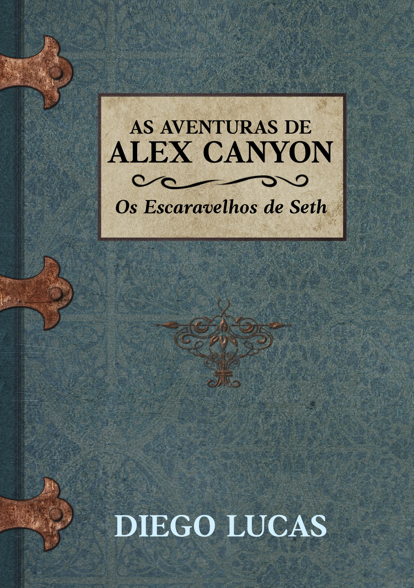

Capa não oficial
Enquanto investigava o desaparecimento de um amigo na Estrada da Morte, Bolívia, o arqueólogo Alex Canyon descobre um templo oculto sobre as montanhas. O que ele não esperava, entretanto, era se deparar com hieróglifos egípcios e um artefato que poderia levá-lo a uma descoberta que parecia improvável: uma tumba no Egito.
Ao partir para o Egito em busca de respostas, Alex encontra um pergaminho que revela a existência de três escaravelhos que se reunidos, dariam poderes inimagináveis a quem os possuíssem. Envolvido completamente nesta busca, Alex se vê no meio de um fogo cruzado entre Johnny West, um empresário norte-americano e William Wright, líder de uma seita denominada A Ordem de Seth, que também buscam os artefatos e farão qualquer coisa para consegui-los.
Acompanhe Alex nesta empolgante aventura que o levará da Bolívia ao Egito, das altas montanhas do Himalaia à floresta do Congo, do Alasca até a França e descubra o quão perigosa pode ser a vida de um arqueólogo como Alex Canyon.
EM BREVE!